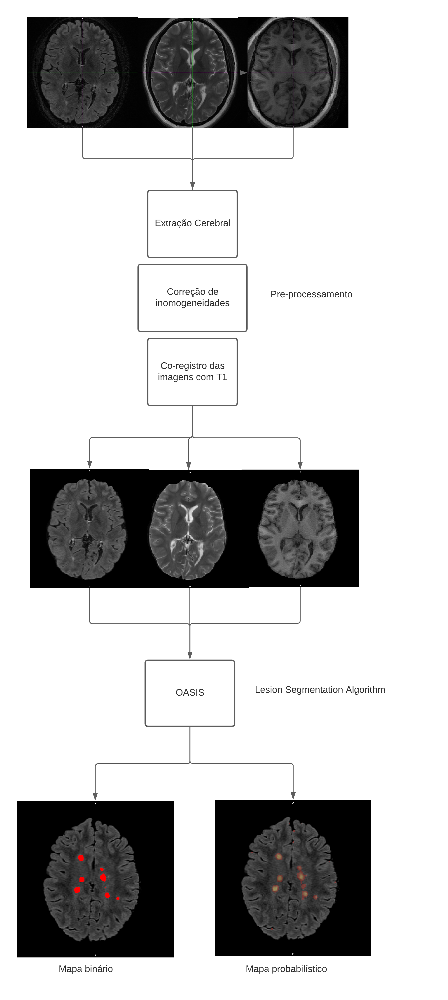
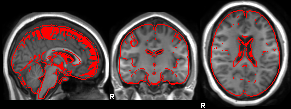
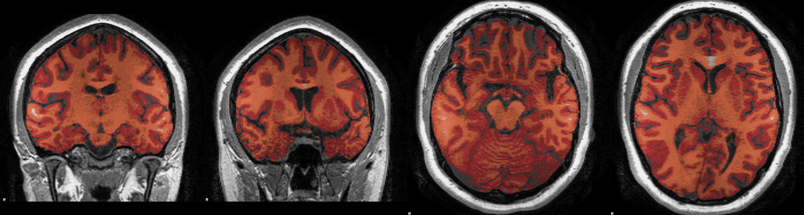
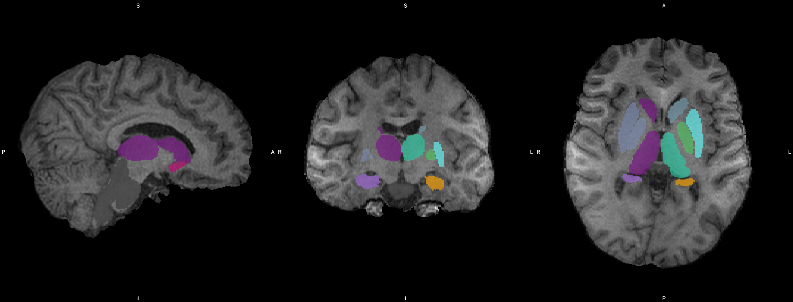

Processamento de imagens anatômicas
Objetivos
Este tópico se destina ao processamento de imagens anatômicas de pacientes com esclerose múltipla ou outras patologias desmielinizantes. Ao final do protocolo nosso objetivo é obter os seguintes dados:
Mapa de lesões (probabilístico e binário)
Mascaras de substância branca, substância cinzenta e LCR
Volumetria normalizada de cérebro total, substância branca e substância cinzenta
Volumetrias subcorticais normalizadas e absolutas
Mapas corticais de volume, área e espessura com parcelações
Mapa de lesões
Inicialmente, costumo utilizar um script em R que realiza os seguintes procedimentos:
Extração de calota craniana
Normalização de sinal
Cálculo de mapas lesionais
Para chamar este script, necessitamos de pelo menos:
Um T1 volumétrico (t1.nii.gz)
Um Flair volumétrico (flair.nii.gz)
Um T2 (t2.nii.gz)
De dentro de uma pasta com os 3 arquivos chame:
lesionMap t1.nii.gz t2.nii.gz flair.nii.gz
O processamento do script segue o seguinte algoritmo:
É importante que a segmentação das lesões seja o primeiro passo do nosso fluxo, porque além de já realizar algumas funções com nosso T1, o mapa de lesões será utilizado em funções posteriores, como as volumetrias
O script de R que é chamado pelo comando lesionMap pode ser visualizado em https://github.com/rafaelsommer1/neuroimage/blob/master/R/lesionMap.R, caso seu mapa não fique adequado, é possível customizar os parâmetros do script
Volumetrias com SIENAX e FIRST
Para cálculo de volume de substância branca e cinzenta costumo utilizar o SIENAX, visto que o mesmo nos proporciona tanto os resultados normalizados quanto os valores absolutos, e se trata de um algoritmo relativamente rápido e acurado de segmentação.
- SIENAX
S.M. Smith, Y. Zhang, M. Jenkinson, J. Chen, P.M. Matthews, A. Federico, and N. De Stefano. Accurate, robust and automated longitudinal and cross-sectional brain change analysis. NeuroImage, 17(1):479-489, 2002.
Para o SIENAX precisaremos do nosso T1 volumétrico e um mapa binário de lesão que é utilizado para preencher a substância branca evitando a subestimação dos volumes.
O comando é simples
sienax t1.nii.gz \
-B "-f 0.25 -B" \
-lm binmask.nii.gz
Os arquivos resultantes se encontrarão em uma pasta t1_sienax a pasta resultante terá os seguintes arquivos:
report.html = arquivo com os resultados
report.sienax = arquivo com os resultados em texto
t12std.mat = matrix utilizada para normalização do cérebro
Ao abrir o arquivo report.html um relatório deve ser aberto no seu browser contendo imagens para correção de qualidade da extração cerebral, registro e segmentação e os resultados volumétricos em mm3 e o valor de escalonamento que podera ser utilizado no FIRST a seguir
Exemplos de imagens contidas em report.html
 Exemplo de report.sienax
SIENA - Structural Image Evaluation, using Normalisation, of Atrophy
part of FSL www.fmrib.ox.ac.uk/fsl
running cross-sectional atrophy measurement: sienax version 2.6
sienax
---------- extract brain --------------------------------------------
---------- register to standard space using brain and skull --------
(do not worry about histogram warnings)
VSCALING 1.5979280678
---------- mask with std mask ---------------------------------------
---------- segment tissue into types --------------------------------
---------- convert brain volume into normalised volume --------------
tissue volume unnormalised-volume
GREY 859547.67 537913.87
WHITE 779114.57 487578.00
BRAIN 1638662.24 1025491.87
Após obter os valores de volumetria dos tecidos cerebrais de forma geral, realizaremos a segmentação das estruturas subcorticais desses pacientes com FIRST no pacote criado pelo nosso grupo, podemos utilizar um script que padroniza a análise:
- FIRST
Patenaude, B., Smith, S.M., Kennedy, D., and Jenkinson M. A Bayesian Model of Shape and Appearance for Subcortical Brain NeuroImage, 56(3):907-922, 2011.
$ mkdir first_results
$ run_first_all -i t1.nii.gz -o first_results/results
$ cd first_results
$ firstSeg results_all_fast_firstseg
Por fins de reprodutibilidade sugiro sempre realizar o chamado desta forma. esse bloco de código faz o seguinte
Cria uma pasta para armazenar os resultados
Chama FIRST para realizar a segmentação no arquivo de T1
Troca para o diretório dos resultados
Chama o script personalizado para gerar um arquivo com os resultados volumétricos
O resultado é uma pasta com as imagens segmentadas, e um arquivo de texto firstSeg.txt que contém algo nesse sentido:
27139 5964.219717 Left-Thalamus-Proper
14744 3240.224603 Left-Caudate
19081 4193.348186 Left-Putamen
6018 1322.549624 Left-Pallidum
58330 12818.929808 Brain-Stem
11958 2627.957529 Left-Hippocampus
4332 952.024755 Left-Amygdala
1856 407.885029 Left-Accumbens-area
24642 5415.464912 Right-Thalamus-Proper
9711 2134.144135 Right-Caudate
20585 4523.875709 Right-Putamen
6652 1461.881040 Right-Pallidum
13055 2869.040436 Right-Hippocampus
4068 894.006625 Right-Amygdala
2426 533.151444 Right-Accumbens-area
Aqui a primeira coluna se refere ao número de voxels do ROI, a segunda ao volume em mm3 e a terceira a estrutura do ROI
Estes resultados, porém, se referem aos volumes não-normalizados. Para normalizá-los basta multiplicar o volume pelo VSCALLING obtido no SIENAX
Sempre fica recomendado, também, checar a qualidade da segmentação visualizando as imagens Neste exemplo, podemos fazer isso com o seguinte comando:
$ cd ..
$ fsleyes t1.nii.gz first_results/results_all_fast_firstseg.nii.gz -cm subcortical
Esse comando abrirá o visualizador com algo parecido com isso:
SIENA para volumes longitudinais
Uma opção interessante caso o interesse seja a evolução do volume cerebral total ao longo do tempo é a utilização do SIENA. Aqui utilizamos um algoritimo para estimar a mudança de volume cerebral entre dois pontos temporais, utilizando um registro meio-a-meio e estimando a média do deslocamento dos bordos cerebrais, portanto, sem diferenciação no tipo de tecido. Uma descrição detalhada pode ser encontrada em:
- SIENA
S.M. Smith, N. De Stefano, M. Jenkinson, and P.M. Matthews. Normalised accurate measurement of longitudinal brain change. Journal of Computer Assisted Tomography, 25(3):466-475, May/June 2001.
A implementação é tão simples que pode ser realizada com uma linha:
siena t1_time1 t1_time2 -B "BET OPTIONS" -o output_folder
Para imagens adquiridas no INSCER, tenho obtido bons resultados com -B “-f 0.25 -B” mas isto pode ser alterado conforme sua preferência e a manipulação de bet (https://fsl.fmrib.ox.ac.uk/fsl/fslwiki/BET/UserGuide)
Freesurfer
Ainda sobre opções de processamento de imagens estruturais volumétrics, um dos algoritmos mais completos para estimação tanto de volumes quanto medidas de superfície é recon-all -all do Freesurfer A personalização de parâmetros aqui é ampla e pode ser revisada em: https://surfer.nmr.mgh.harvard.edu/fswiki/recon-all Existe um script dentro dos comandos criados para o grupo que possui uma configuração padrão que tem produzido resultados agradáveis com imagens adquiridas na GE do INSCER.
Para chamá-lo basta usar o seguinte comando, de dentro da pasta com seu arquivo anatômico
freesurferIndv t1.nii.gz
Esse comando provavelmente é o que consome mais tempo de todos os descritos nesse seguinte e realiza as seguintes operações:
Todos os passo de recon-all -all
Transformações com qcache
Subsegmentação de hipocampo e tronco encefálico
Já fornecendo todos os arquivos necessários para análise de grupos. Contudo, o algoritimo do Freesurfer, invariavelmente necessita de correções manuais posteriores em alguns pontos específicos
Troubleshooting
Após o processamento, geralmente o usuário necessita realizar algumas correções manuais de qualidade em alguns passos, são eles:
Skull-stripping
Para acessar o wiki do freesurfer sugere:
freeview -v subj/mri/T1.mgz \
subj/mri/brainmask.mgz:visible=false \
-f subj/surf/lh.white:edgecolor=yellow \
subj/surf/lh.pial:edgecolor=red \
subj/surf/rh.white:edgecolor=yellow \
subj/surf/rh.pial:edgecolor=red
Em que subj é o código fornecido ao recon-all